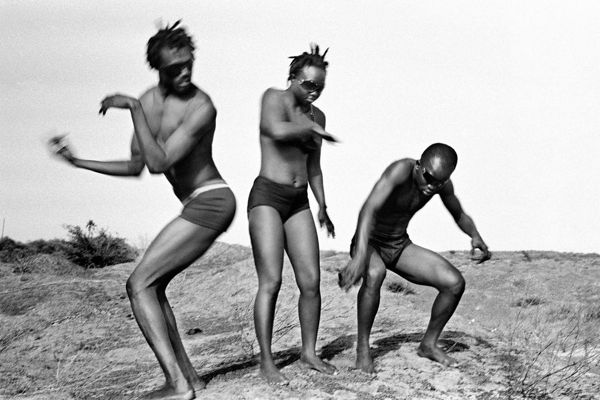
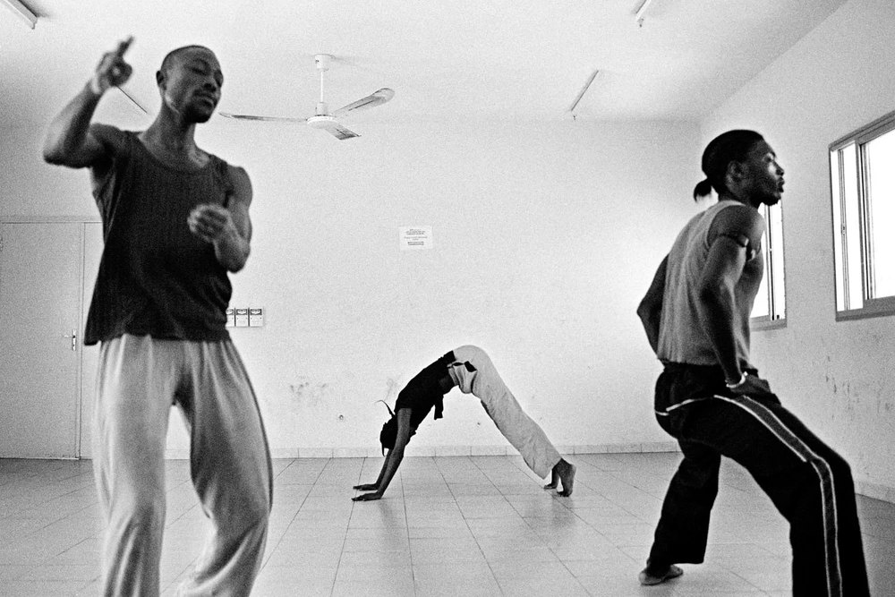
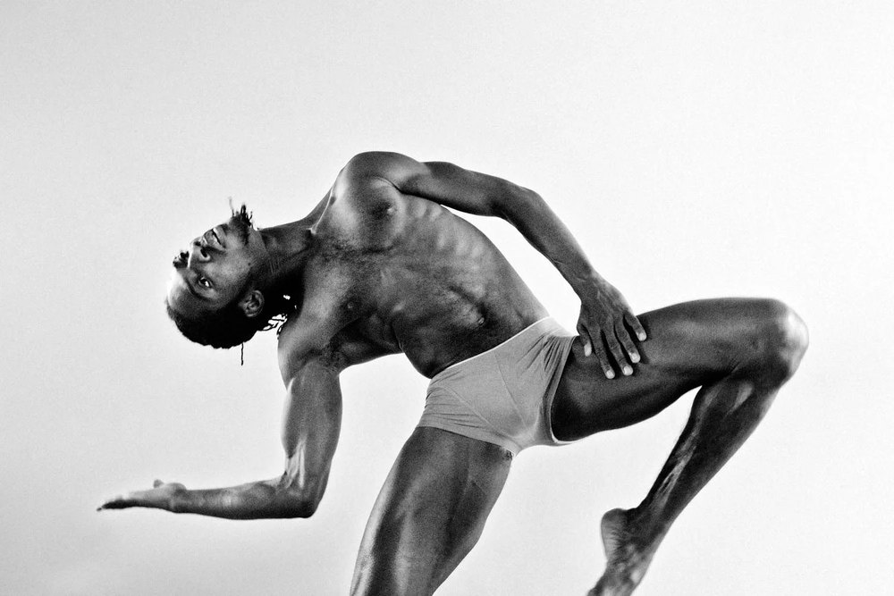
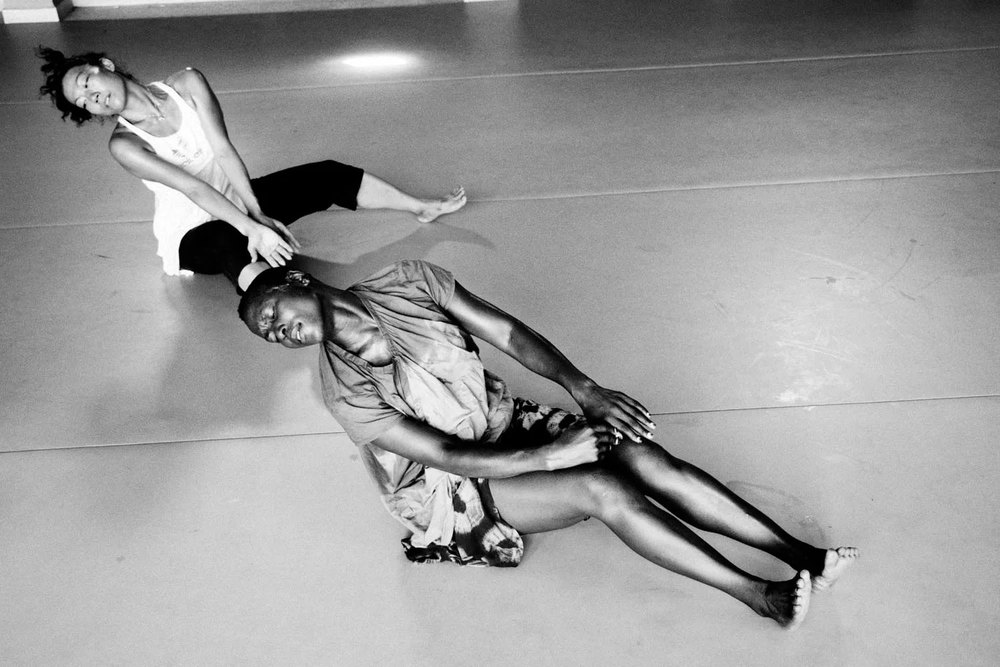

From the network
Élise Fitte-Duval
Photographs of contemporary dance in Africa, followed from the rehearsal room to the stage.

Élise Fitte-Duval is a photographer from Martinique who works in Senegal. She studied at the École d’Arts Plastiques in Martinique and at the École Nationale Supérieure des Arts Décoratifs in Paris.
In 2011 Casa África named her best female African photographer at the Bamako Encounters for Vivre les pieds dans l’eau, her series on the floods in Dakar.
Text and series lines are draft, from the profile on commerceandculture.org. Website to find.
Danser l’Espoir
An ongoing project since 2003: Fitte-Duval follows contemporary dancers from across the continent in their work sessions, offstage as well as on, to show how the art is made and how it is changing.



© Élise Fitte-Duval